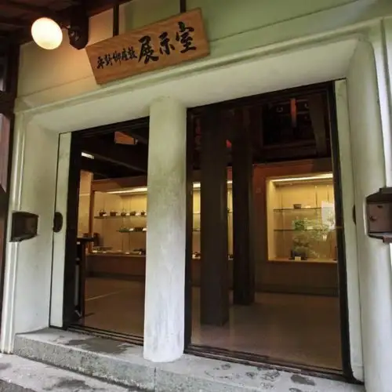
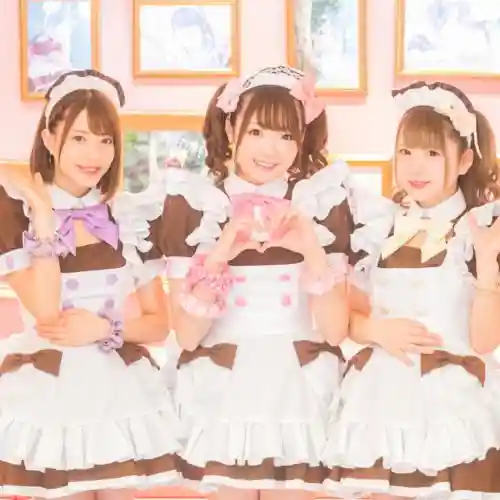
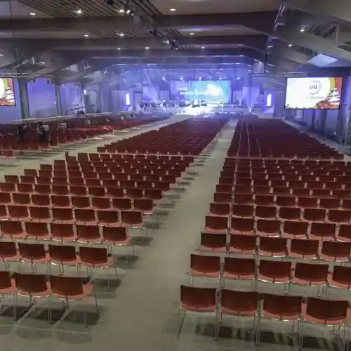

Japan / Osaka / Osaka
Osaka · Osaka
Osaka
Highlighted on the Osaka map.

Osaka City Hall
@ Ho Mu Kafe Osaka Main Shop
Osaka · 06-6131-4550

ALLYS Umeda (Ariizu)
Osaka · 06-6476-8823
ATC Horu
Osaka · 06-6615-5006

Amazing Kart ISK Osaka Maishima Mise
Osaka · 06-6466-2022
Asue Ariina Osaka (Osaka Chuo Gym)
Osaka · 06-6576-0800
Asue Osaka Puru
Osaka · 06-6571-2010
BLANZ Shinsaibashi
Osaka · 06-6616-9932
DOTON PLAZA
Osaka · 06-6212-6161
EST (Esuto)
Osaka · 06-6371-8001
GLION MUSEUM
Osaka · 06-6573-3006
Gardener's Tenshiba i:na Mise
Osaka · 06-6796-8010
HACOSTADIUM (Hakosutajiamu) Osaka
HEP FIVE
Osaka · 06-6313-0501
HEP FIVE Kanransha
HERBIS PLAZA/PLAZA ENT
Osaka · 06-6343-7500
Hoop (Fupu)
Osaka · 06-6626-2500
JO-TERRACE OSAKA
Osaka · 06-6314-6444
JUMP SHOP Osaka Shinsaibashi Mise
Osaka · 06-6484-5525
Joshin SUPER KIDS LAND Main Shop
Osaka · 06-6634-0041
Joshin Supakizzu Land Main Shop
KPG RIVER CRUISE Osaka Yakatabune
Osaka · 0120-0489-14
LUCUA osaka (Rukua Osaka)
Osaka · 06-6151-1111
NAMBA Nannan
Osaka · 06-6631-5102
NELU Korai Hashi
NU Chaya Town / NU Chaya Town Purasu
Osaka · 06-6373-7371
NinjaDo (Ninja Do)
OAP (Osaka Amenitei Park)
OBP (Osaka Bijinesu Park)
Osaka · 06-6946-1048
OCAT (Osaka Shiteieataminaru)
Osaka · 06-6635-3000
OMM (Osaka Machandaizu Mato)
Osaka · 06-6943-2010
OMO7 Osaka by Hoshino Resort
Osaka · 050-3134-8095
PICOZO (Sado Calligraphy Cocoon flower)
Osaka · 06-6786-8537
PINK KAWAII Kafe
Pivot BASE Travel Café @ Tonbori
Osaka · 090-9864-2710
ROAD BIKE RENTAL JAPAN
Osaka · 050-1722-8801
SAMURAININJA
Osaka · 06-6536-8048
SPACE9 (Supesunain)
Osaka · 06-6622-8802
Sushi Making Experience Namba
TAIKO-LAB Umekita
Osaka · 0120-681-015
TAKOPA (TAKOYAKI PARK)
Osaka · 06-6464-3080
TKTS Namba Tourist Information
Osaka · 03-6228-1062
TMT OSAKA
Osaka · 06-6212-0077
TOHO Shinemazu Namba
Osaka · 050-6868-5043
TUGBOAT_TAISHO (Taguboto Taisho)
The Kitahama PLAZA
WILLER Basutaminaru Osaka Umeda
Washoku Home Cooking - Machiko
W Osaka
Osaka · 06-6484-5355
Zepp Namba (Zeppunamba)
Osaka · 06-6630-8533
and (Ando)
Osaka · 06-6625-2800
bern (Berun)
Osaka · 06-7171-4273
hu+gMUSEUM (Hagu Museum)
Osaka · 06-6586-3789
namBa HIPS (Nambahippusu)
Osaka · 06-6213-4500
Aioi Nissei Dowa Sonpo Za · Fenikkusuhoru
Osaka · 06-6363-0311
Ajibiru Minami Mise
Osaka · 06-6211-1171
Abe no Kyuzumoru
Osaka · 06-6556-7000
Abe no Rushiasu
Osaka · 06-4397-1800
Amida Ike Daikoku
Osaka · 06-6538-2987
Umeda Kokusai Kurinikku
Osaka · 080-6925-4560
Ean Osaka Tsurisutoinfomeshonkafe
Osaka · 06-6641-1120
Okini Ariina Maishima
Osaka · 06-6460-1811
Gamoyon Kaiwai (Gamo Shitei Me)
Ganko Heiya Sato Residence
Osaka · 06-6796-0728
Kimo no Rentaru wargo Osaka Shinsaibashi Mise
Osaka · 03-4582-4864
Kin'ei Aporobiru
Osaka · 06-6633-0001
Kurashi no Museum (Ganko Heiya Sato Residence)
Sakishima Kosumotawa Lookout
Osaka · 06-6615-6055
Suki Yaki Kita Mura
Osaka · 06-6245-4129
Semba Shinsaibashi Suji Shopping Street
Sembiru (Semba Center Biru)
Osaka · 06-6281-4500
Tombori Ribauoku
Osaka · 06-6644-7565
Tombori Ribakuruzu
Osaka · 050-1807-4118
Naniwa no Wadaiko Workshop (Taiko Sei)
Osaka · 06-6561-0021
Naniwa Meibutsu Ichibiri Iori Dotombori Mise
Osaka · 06-6212-5104
Namba CITY
Osaka · 06-6644-2960
Namba Hatch (Namba Hatchi)
Osaka · 06-4397-0572
Namba Uoku
Osaka · 06-6643-1641
Namba Gu Land Kagetsu
Osaka · 06-6641-0888
Namba Park Su
Osaka · 06-6644-7100
Namba Park Sushinema
Osaka · 050-6864-7125
Namba Marui
Osaka · 06-6634-0101
Mahobin Memorial Museum
Osaka · 06-6356-2340
Ajia Taiheiyo Toredo Center (ATC)
Osaka · 06-6615-5230
Abe no Rakubasu
Amerika Village
Arude Shin Osaka
Irasuto Manga Kyoshitsu egaco Osaka Ko
Intekkusu Osaka
Osaka · 06-6612-8800
Edion'ariina Osaka (Osaka Furitsu Taiiku Hall)
Osaka · 06-6631-0121
Kanpuri Minami Shinsaibashi Mise
Osaka · 06-6268-0120
Gasubiru Shokudo
Osaka · 06-6231-0901
Kizzu Plaza Osaka
Osaka · 06-6311-6601
Kyaputen Line
Osaka · 06-6573-8222
Kirara Kyujo Shopping Street
Kirin Do Yakkyoku Habisu Osaka 4 Kai
Osaka · 06-6454-0602
Kurisuta Nagahori
Osaka · 06-6282-2100
Guddosumairu × Animeitokafe Osaka Nihombashi
Guranfuronto Osaka
Osaka · 06-6372-6300
Guranfuronto Osaka Shoppu & Resutoran
Kokumindoraggu Shinsaibashi Suji 1 Chome Mise
Osaka · 06-4704-5930
Kosumosukuea
Za Garden Orientaru Osaka
Osaka · 06-6353-8810
Za Shinfoniihoru
Osaka · 06-6453-1010
Jiburi Gaippai Donguri Kyowakoku Namba Mise
Osaka · 06-6213-8508
Janguru Osaka Nihombashi Mise
Janjan Alley (Nanyo Tori Shopping Street)
Suiitsuparadaisu Umeda Mise
Osaka · 06-6311-4649
Supotaka Shinsaibashi Biggusuteppu Main Shop
Osaka · 06-6484-7164
Sutsu Ga Su Shuri O Shin Osaka Mise
Osaka · 050-8885-6545
Taimuautomagatto Osaka
Diamoru Osaka
Osaka · 06-6348-8931
Doriimutekondosukuru
Osaka · 06-6881-5519
Don Kihote Dotombori Mise Tourist Information
Osaka · 06-4708-1411
Don Kihote Dotombori Midosuji Mise Tourist Information
Osaka · 06-6214-3211
Dojima Chika Center
Narejjikyapitaru
Osaka · 06-6372-6530
Hiruton Plaza Iisuto / Uesuto
Osaka · 06-6342-0002
Bijuopera Shinsaibashi Suteyudio
Osaka · 080-3833-0798
Bikkukamera Namba Mise
Osaka · 06-6634-1111
Birubodoraibu Osaka (Billboard Live OSAKA)
Osaka · 06-6342-7722
Piisu Osaka (Osaka Kokusaiheiwa Center)
Osaka · 06-6947-7208
Festival Horu
Osaka · 06-6231-2221
Bu Land Shoppusutoriito
Howaitei Umeda
Osaka · 06-6312-5511
Botoresu Suminoe
Osaka · 06-6682-6212
Mizu no Supotorojiigyararii
Osaka · 06-6614-8000
Miraiza Osaka Shiro
Osaka · 06-6755-4320
Yamada Denki LABI1 Namba
Osaka · 06-6649-8171
Yanmasutajiamu Nagai
Osaka · 06-6691-2500
Yunibasaru Sutajio Japan
Osaka · 0570-20-0606
Yodobashi Umeda Tawa
Osaka · 06-4802-1010
Rego Land ® Disukabarii Center Osaka
Osaka · 0800-100-5346
Isshin Tera Shiata Gu Raku
Osaka · 06-6774-4002
Ippan Shadanhojin Nippon Satsujin Michi Kyokai
Mandai Ike Park
Osaka · 06-6691-7200
Sanko Shrine
Osaka · 06-6761-0372
Mikuni Joryu Tokoro
Osaka · 06-6910-6960
Mitsu Tera
Osaka · 06-6211-1982
Joho Ukiyoe Kan
Osaka · 06-6211-0303
Joho Onsen Ikkyu
Osaka · 06-6467-1519
Naka Yuki Shima
Naka Yuki Shima LOVE CENTRAL
Osaka · 06-6362-1000
Naka Yuki Shima Festival Tawa / Naka Yuki Shima Festival Tawa Uesuto
Osaka · 0570-200-030
Naka Yuki Shima Park
Osaka · 06-6312-8121
Chugokuryori Kinpuku Rai
Osaka · 06-6213-5580
Chuza Kuidaore Biru
Kyuhoji Hashi
Osaka · 06-6615-6818
Kyosera Domu Osaka
Osaka · 06-6586-0106
Kyobashi Komuzu Garden
Osaka · 06-6357-7733
Imamiya Ju Shrine
Osaka · 06-6643-0150
Imahashi
Denpo Yama Sainen Tera
Osaka · 06-6461-5602
Sumitomo Seimei Izumi Horu
Osaka · 06-6944-2828
Sumiyoshi Park
Osaka · 06-6671-2292
Sumiyoshi Taisha
Osaka · 06-6672-0753
Shinano Hashi
Ganso Teppanyaki Suteki Miso no Osaka Mise
Osaka · 06-6341-4471
Zen Kyo Tera (Senkoji)
Osaka · 06-6791-2680
Hachiken Ie Hama Funatsukiba
Enju Iori (Kama Hachiman)
Osaka · 06-6761-3691
Sosaku Wagashi Workshop Basho Iori Tenpozan Mise
Osaka · 06-6576-5814
Yushin Kan Nihonto Tameshi Kiri Experience
Kita Mido (Honganji Tsu Village Betsuin)
Osaka · 06-6261-6796
Kitashinchi
Osaka · 06-6345-0006
Kitahama Retorobirujingu
Osaka · 06-6223-5858
Sennichimae Doguya Suji Shopping Street
Osaka · 06-6633-1423
Sembayashi Shopping Street
Minamihorie Kita Horie Kaiwai
Minamisemba
Kuchi Nawa Saka
Kawai Deko Maki Sushi Experience
Kichijoji
Osaka · 06-6771-4451
Ware Hikosan Taisei Kan'onji
Osaka · 06-6691-3578
Suo Town Tori (Yoroppa Tori)
Saku Yako no Hana Kan
Osaka · 06-6912-0055
Shitenno Tera
Osaka · 06-6771-0066
Shitenno Tera Koshin Do
Osaka · 06-6772-9420
Kokubunji
Osaka · 06-6351-5637
National Kokusai Art Museum
Osaka · 06-6447-4680
National Bunraku Gekijo
Osaka · 06-6212-2531
Za Ma Shrine
Osaka · 06-6251-4792
Johoku Park
Osaka · 06-6928-0005
Johoku Shobuen
Horikawa Ju Shrine
Osaka · 06-6311-8626
Horikoshi Shrine
Osaka · 06-6771-9072
Do Shima Abanza
Osaka · 06-6343-3636
Do Shima Kurosuoku
Zofuku Tera
Osaka · 06-6772-5734
Daimaru Shinsaibashi Mise
Osaka · 06-6271-1231
Dai Tora Kamaboko Ebisubashi Suji Main Shop
Osaka · 06-6641-3451
Dainen Butsuji
Osaka · 06-6791-0026
Otsuki Nogakudo
Osaka · 06-6761-8055
Oe Hashi
Taishu Engeki (Gofuku Za)
Daiki Suisan Kaitenzushi Dotombori Mise
Osaka · 06-6214-1055
Osaka Kurashi no Konjaku Kan
Osaka · 06-6242-1170
Osaka Boteju Main Shop
Osaka · 06-6643-4410
Osaka Wakuwaku Akademii
Osaka · 0120-554-728
Osaka Katedoraru Hijiri Maria Daiseido
Osaka · 06-6941-2332
Osaka Shitei Shinyokinko Sutajiamu
Osaka · 06-6460-1011
Osaka Suteshonshitei
Osaka Dakku Tour
Osaka · 06-6941-0008
Osaka Puruaisusu Ga to Ba
Osaka Herikoputa Yuran (Ogawa Koku)
Osaka · 06-4804-1333
Osaka Naka Yuki Shima Art Museum
Osaka · 06-6479-0550
Osaka Kigyo Ie Museum
Osaka · 06-4964-7601
Osaka Kurabu
Osaka · 06-6231-8361
Osaka Torihikijo
Osaka · 06-4706-0800
Osaka Shiki Gekijo
Osaka · 0570-008-110
Osaka Kokusaikoryu Center (Aihausu)
Osaka · 06-6772-6729
Osaka Shiro Horu
Osaka · 06-6941-0345
Osaka Shiro Park
Osaka · 06-6755-4146
Osaka Shiro Tenshukaku
Osaka Shiro Gyoza Fune
Osaka Josai no Maru Garden
Osaka · 06-6941-1717
Osaka Shiro Ongakudo
Osaka · 06-6947-1197
Osaka Tenmangu Shrine
Osaka · 06-6353-0025
Osaka Gesuido Science Museum
Osaka · 06-6468-1156
Osaka Chuo Public Hall
Osaka · 06-6208-2002
Osaka Ritto Hiroshi Toji Art Museum
Osaka · 06-6223-0055
Osaka Ritsu Science Museum
Osaka · 06-6444-5656
Osaka Ritsu Art Museum
Osaka · 06-6771-4874
Osaka Ritsu Shizen Shi Museum
Osaka · 06-6697-6221
Osaka Ritsu Nagai Botanical Garden
Osaka · 06-6696-7117
Osaka Ritsu Abeno Bosai Center (Abe no Tasukaru)
Osaka · 06-6643-1031
Osaka Koiki Kankyo Shisetsu Kumiai Maishima Kojo
Osaka · 06-6463-4153
Osaka Furitsu Joho Engei Museum (Wahha Joho)
Osaka · 06-6631-0884
Osaka Furitsu Naka Yuki Shima Library
Osaka · 06-6203-0474
Osaka Bunka Kan Tenpozan
Osaka · 06-6586-3911
Osaka Shin Kabukiza
Osaka · 06-7730-2222
Osaka Kizu Oroshiuri Market
Osaka · 06-6631-1131
Osaka Shochiku Za
Osaka · 06-6214-2211
Osaka History Museum
Osaka · 06-6946-5728
Osaka Suijo Basu Akuaraina
Osaka · 06-6942-5511
Osaka Minato Hansen Kata Kankosen Santamaria
Osaka Minato Hansen Kata Kankosen Santamaria Towairaitokuruzu
Osaka Kagakugijutsukan
Osaka · 06-6441-0915
Osaka Kanko Boranteiagaido Kyokai
Osaka · 090-3059-6923
Osaka Tourist Information
Osaka · +81-6-6131-4550
Osaka Takashima Ya
Osaka · 06-6631-1101
Osaka Tsuruhashi Market
Osaka · 06-6971-2465
Tenpozan Hababirejji
Tenpozan Magattopuresu
Osaka · 06-6576-5501
Tenpozan Park
Osaka · 06-6571-0552
Tenpozan Taikan Ran Kuruma
Tenma Tenjin Hanjo Tei
Osaka · 06-6352-4874
Tennoji Shichi Saka
Tennoji Koen Entoransueria (Tenshiba)
Osaka · 06-6773-0860
Tennoji Zoo
Osaka · 06-6771-8401
Tenjin Saka
Osaka · 06-6774-9910
Tenjimbashi
Tenjimbashi Suji Shopping Street
Tenjimbashi Suji Shopping Street (1 3 Chome)
Osaka · 06-6352-6164
Taihei Tera
Osaka · 06-6779-9133
Taiyuji
Osaka · 06-6311-5480
Himejima Shrine
Osaka · 06-6471-5230
Abe Seimei Shrine
Osaka · 06-6622-2565
Ankyo Shrine
Osaka · 06-6771-4932
Soemon Town
Hoshu In
Osaka · 06-6351-4960
Jakko Tera (Eguchi no Kun Do)
Osaka · 06-6328-0504
Teranishi Ie Abeno Nagaya
Osaka · 06-6624-7618
Ogura Ya / Wogura Kombu
Osaka · 06-6211-0012
Sukunabikona Shrine
Osaka · 06-6231-6958
Hakimono Tonyagai (Hakihaki Taun)
Osaka · 06-6641-0523
Yamamoto Nogakudo
Osaka · 06-6943-9454
Kawaguchi Kirisutokyo Kai
Osaka · 06-6581-5061
Kawasaki Hashi
Kawabata Yasunari Bungaku Hi
Tsuneyasu Hashi
Shiawase no Fukurokafe chouette
Osaka · 06-6243-2960
Kaiten Sushi CHOJIRO
Osaka · 06-6227-8337
Iyasaka Shrine
Osaka · 06-6741-0900
Midosuji Chokoku Sutoriito
Osaka · 06-6208-7854
Miyuki Tori (Koriataun)
Mito Park
Mito Miya (Mito Hachiman Shrine)
Osaka · 06-6211-8655
Goryo Shrine
Osaka · 06-6231-5041
Shinsaibashi Mitsuya Shinsaibashi Main Shop
Osaka · 06-6211-4751
Shinsaibashi Suji Shopping Street
Osaka · 06-6211-1114
Shingan Tera
Osaka · 06-6764-0630
Ninja Yashiki Experience (Ninja Torikkuhausu)
Shiki Chokichi Shrine
Osaka · 06-6709-1757
Aizen Do Shoman In (Aizen San)
Osaka · 06-6779-5800
Keitaku Sono
Osaka · 06-7494-3583
O Ten In (Shiatorikaru O Ten In)
Osaka · 06-6771-7641
Ebisubashi Suji Shopping Street
Ogi Town Park
Kobushi Shinkai
Osaka · 090-9168-1312
Shinsekai
Osaka · 06-6643-6322
Shin Osaka Tourist Information
Shin Umeda Shitei Sogo Information Center
Osaka · 06-6440-3899
Hiyoshi Shrine
Osaka · 06-6925-6236
Nihonkirisutokyodan Naniwa Kyokai
Osaka · 06-6231-4951
Nippon Kogei Kan
Osaka · 06-6641-6309
Nihombashi
Nihombashi Denden Taun
Osaka · 06-6655-1717
Nihombashi Sogo Information Center
Nipponginko Osaka Branch Kyukan
Osaka · 06-6206-7742
Kyu Konishi Ie Jutaku Shiryo Kan
Osaka · 06-6203-3041
Kyu Sakuranomiya Public Hall
Osaka · 06-6881-3330
Kyu Kuroda Han Kurayashiki Nagaya Mon
Meijiya Biru
Meiji Hashi (Kinenhi)
Sonezaki O Hatsu Tenjin Tori Shopping Street
Osaka · 06-6311-7622
Asahi Gekijo
Osaka · 06-6633-4553
Hon Town Hashi
Osaka · 06-6568-2715
Kumata Shrine
Osaka · 06-6791-0208
Matsushita IMP Biru
Osaka · 06-6942-2250
Matsuya Town Suji Shopping Street
Matsusaka Ushi Yakiniku M Hozen Tera Yokocho Mise
Osaka · 06-6211-2917
Sendan Mokkyo (Sendan no Kibashi)
Ume Sendo
Osaka · 06-6372-1098
Umeda BIGMAN
Umeda Sukaibiru Kuchu Teien Lookout
Osaka · 06-6440-3855
Umeda Gofuku Za
Osaka · 06-6367-0529
Umeda Geijutsugekijo Shiata Doramashitei
Osaka · 06-6377-3888
Umeda Geijutsugekijo Meinhoru
Osaka · 06-6377-3800
Mori to Riru no BBQ Fiirudo
Osaka · 06-6460-6090
Mori no Miya Piroteihoru
Osaka · 06-6944-1151
Morino Sanpuru
Osaka · 06-6792-7543
Sei Hasu Tera
Osaka · 06-6461-2845
Kema Sakura Yuki Miya Park
Kema Komon
Mizu Taki Ryotei Hakata Hana Aji Tori Shinsaibashi Mise
Osaka · 06-6252-5536
Suisho Hashi
Ezaki Memorial Museum
Osaka · 06-6477-8257
Izumi Nuno Kan
Osaka · 06-6469-5176
Hozen Tera Alley
Hoan Tera
Osaka · 06-6211-4585
Horaku Tera
Osaka · 06-6621-2103
Tsunami · Takashio Suteshon
Osaka · 06-6541-7799
Kaiyo Do Figyua Museum Miraiza Osaka Shiro
Osaka · 06-6940-0835
Kaiyukan
Yodoyabashi
Yodoyabashi odona
Yodoyabashi Kanko Suteshon
Yodogawa River Park
Osaka · 06-6994-0006
Yodogawa Shrine
Osaka · 06-6921-5980
Minato Town Ribapureisu
Osaka · 06-4397-0571
Yuki Art Museum
Osaka · 06-6203-0188
Takimi Koji
Yakiniku Rohen
Osaka · 06-6226-8629
Katayama Shashinkan
Osaka · 06-6691-3706
Tamatsukuri Inari Shrine
Osaka · 06-6941-3821
Shogoku Tamashii Shrine
Osaka · 06-6771-0002
Nama Ne Shrine
Osaka · 06-6659-2821
Ikoma Birujingu
Osaka · 06-6231-0751
Tanabe Mitsubishisei Kusuri Shiryo Kan
Osaka · 06-6205-5100
Shinshu Otani Ha Namba Betsuin (Minami Mido)
Osaka · 06-6251-5820
Sanada Sachi Village Zo
Karabori Shopping Street
Karabori Kaiwai
Sora Niwa Onsen OSAKA BAY TOWER
Osaka · 06-7670-5126
Tachibana Tori (Orenjisutoriito)
Kinutani Koji Tenku Art Museum
Osaka · 06-6440-3760
Mengyo Hall
Midori Hashi
Oimatsu Tori
Higobashi
Mai Kon no Kohara
Osaka · 06-6253-2345
Maishima Kurafuto Kan
Osaka · 06-6463-7282
Maishima Shiisaidopuromunado
Osaka · 06-6460-9855
Maishima Supotsuai Land
Osaka · 06-6460-1646
Maishima Shin Yuhigaoka
Osaka · 06-6572-4050
Semba Birudingu
Osaka · 06-6231-8531
Shibakawa Biru
Basho no Kuhi (Sumiyoshi Park)
Basho Do Warai Rai Bi Mochi (Warabimochi)
Osaka · 06-6440-5928
Hana no I Hashi
Hanahaku Memorial Park Tsurumi Ryokuchi
Osaka · 06-6911-8787
Chaya Town Kaiwai
Chausuyama (Tennoji Park)
Osaka · 06-6761-1770
Sado Experience The Osaka
Osaka · +81-90-3095-5879
Manpukuji
Osaka · 06-6771-2183
Kabura So Iori (Busoan)
Fujita Art Museum
Osaka · 06-6351-0582
Toyokuni Shrine
Osaka · 06-6941-0229
Kintetsu Ato Kan
Kintetsu Hyakkaten Abe no Harukasu Kintetsu Main Shop
Osaka · 06-6624-1111
Kintetsu Hyakkaten Abe no Harukasu Kintetsu Main Shop Foreign Customer's Salon
Kintetsu Hyakkaten Uemoto Town Mise
Osaka · 06-6775-1111
Tsutenkaku
Osaka · 06-6641-9555
Tsutenkaku Hondori Shopping Street
Zohei Museum
Osaka · 06-6351-8509
Zoheikyoku (Kojokengaku)
Osaka · 06-6351-6150
Dotombori
Osaka · 06-6211-4542
Dotombori Konamon Museum
Osaka · 06-6214-6678
Dotombori Biiru Kojo (Dotombori Biiru Jozo)
Osaka · 06-6212-6074
Tekijuku
Osaka · 06-6231-1970
Nozato Sumiyoshi Shrine
Osaka · 06-6471-0277
Kanehisa Uemon Dotombori Mise
Osaka · 06-6211-5502
Hokoryu Hashi
Ginzan Tera
Nishiki Hashi (Nishikibashi)
Nagahori Hashi (Nagahori Hashi Ato)
Nagai Park
Osaka · 06-6694-9007
Hankai Denki Kido (Chinchin Densha)
Osaka · 06-6674-5146
Hankyu Umeda Main Shop
Osaka · 06-6361-1381
Hankyu Tsurisuto Center Osaka Umeda
Hankyu Menzu Osaka (HEP Nabio)
Hankyu Sambangai
Osaka · 06-6371-3303
Hankyu Higashidori Shopping Street
Hanshin Umeda Main Shop
Osaka · 06-6345-1201
Abe Oji Shrine
Abeno Shrine
Osaka · 06-6661-6243
Namba Yasaka Shrine
Osaka · 06-6641-1149
Namba Kyuseki Park
Namba Hashi (Raion Hashi)
Namba Shrine
Osaka · 06-6251-8000
Namba Tourist Information
Roten Shrine (O Hatsu Tenjin)
Osaka · 06-6311-0895
Jin Park
Osaka · 06-6441-6213
Shokuhin Sanpuru Tsukuri Experience
Shokuhin Sanpuru Senmonten Dezainpogatto Main Shop
Osaka · 06-6586-6251
Takatsu Miya (Takatsu Shrine)
Osaka · 06-6762-1122
Korai Hashi
Sakana Tsuri Sono Gogan (Osaka Nanko Sakana Tsuri Sono)
Osaka · 06-6612-2020
Tsurumi Ryokuchi Puru
Osaka · 06-6915-4721
Kuromon Market
Osaka · +81-6-6631-0007
Rei En Tera
Osaka · 06-6772-0065
Nearby in Osaka: ← Nose · Osakasayama →
Other towns: Chihayaakasaka · Daito · Fujiidera · Habikino · Hannan · Higashiosaka · Hirakata · Ibaraki · Ikeda · Izumi · Izumiotsu · Izumisano · Kadoma · Kaizuka · Kanan · Kashiwara · Katano · Kawachinagano · Kishiwada · Kumatori · Matsubara · Minoh · Misakicho · Moriguchi · Neyagawa · Nose · Osakasayama · Sakai · Sennan · Settsu · Shijonawate · Shimamoto · Suita · Tadaoka · Taishicho · Tajiri · Takaishi · Takatsuki · Tondabayashi · Toyonaka · Toyono · Yao
All towns in Osaka · Back to all prefectures